PhyloTrace is a platform for bacterial pathogen
monitoring on a genomic level. Its components evolve around Core-Genome Multilocus Sequence Typing (cgMLST) and
Antimicrobial Resistance Screening. Complex analyses and computation are wrapped into an appealing and
easy-to-handle graphical user interface. Users build a local database comprising analyzed isolates, manageable
directly with the application. The visualization of isolate relationship and genetic profile is highly
interactive aiding to reveal patterns explaining outbreak dynamics and events by connecting genomic information
with epidemiologic variables. PhyloTrace achieves universal compatibility by assigning unique 256-bit hashes
based on sequence and allele information. The ability to easily share analysis results enables efficient
inter-lab comparison and collaboration.
Features
- Interactive cgMLST analysis also for large datasets comprising numerous whole-genome assemblies
- Screening for species-specific genes involved in antibiotics resistance, virulence, stress and more
- Managing an individual and portable local database to continously monitor bacterial populations
- Producing publication-ready plots with minimum-spanning tree network graphs and phylogenetic trees (Neighbour-Joining & UPGMA)
- Extensive export and report functionalities
- and more
We want to make cgMLST analysis and genomic pathogen monitoring accessible to a broad spectrum of individuals and organizations. Therefore our goal is to build an interface with convenient user experience and easy handling that doesn’t require you to be a bioinformatician. The app is in active development. To get a stable version download the newest release.
PhyloTrace is supposed to be used for research and academic purposes only.
www.PhyloTrace.com | info@phylotrace.com
Developed in collaboration with Hochschule Furtwangen University (HFU) and Medical University of Graz (MUG). Featured on ShinyConf 2024 and R/Medicine 2024.


1 Getting Started
PhyloTrace is an open-source platform for in silico bacterial typing with core-genome multilocus sequence typing (cgMLST). This method allows pathogen monitoring on a genomic level by typing allele variants in order to profile the present genetic constitution for individual isolates of a bacterial population. Comparing the allelic profile to other isolates of the same species might reveal coherences that are not visible by the bare eye. Visualizing the generated data enables humans to identify patterns of epidemiologic dynamics (transmission, outbreak variants, source identification), relatedness and population structure. To work with PhyloTrace all that is needed are whole-genome assemblies which demarcate the starting point of the workflow. Easily pipe the files into the cgMLST analysis and step-by-step build up a local database, which can be managed with full control through the app. Visualize and export results in a publication-ready format.
1.1 Workflow
The user manual containing detailed instruction and information is available at www.phylotrace.com/user-manual.
Manage cgMLST Scheme
Download a standardized scheme that defines the genetic targets, nomenclature and allele sequences for the bacterial species of interest from the cgMLST.org and PubMLST public databases. The connection to the server including information on the scheme is integrated in the app. Once one of the 69 available species has been selected and downloaded, everything is ready to go. The scheme can be inspected in detail using the locus info interface.
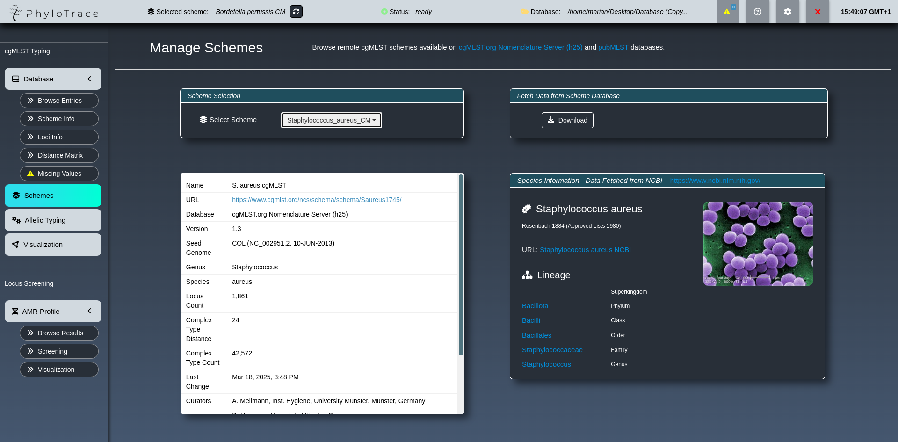
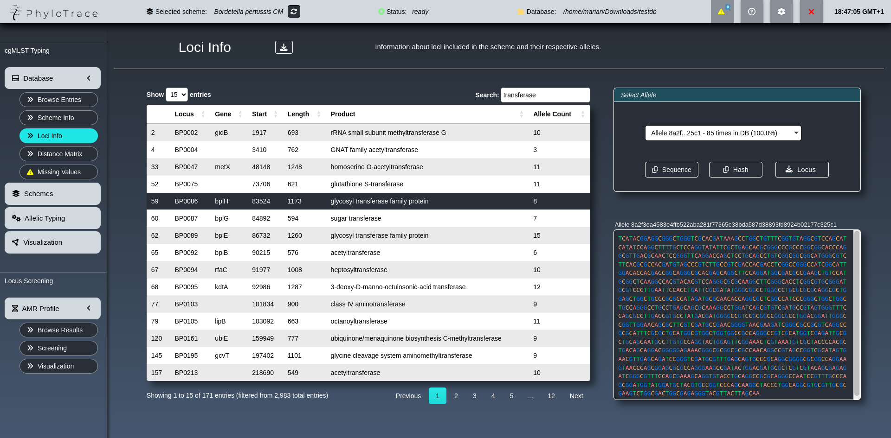
Allelic Typing
Whole-genome assemblies can be entered into the pipeline and are automatically analyzed at high speed. Using the downloaded cgMLST scheme, the bacterial genome is aligned to the known variants at the respective genetic target. By iterating this process over all genes that are part of the core genome, an individual allele profile is generated. If a potential new genetic variant is discovered, it is checked whether the existing allele is still capable of producing a functional protein. Successfully typed assemblies are appended to the local database in real time.
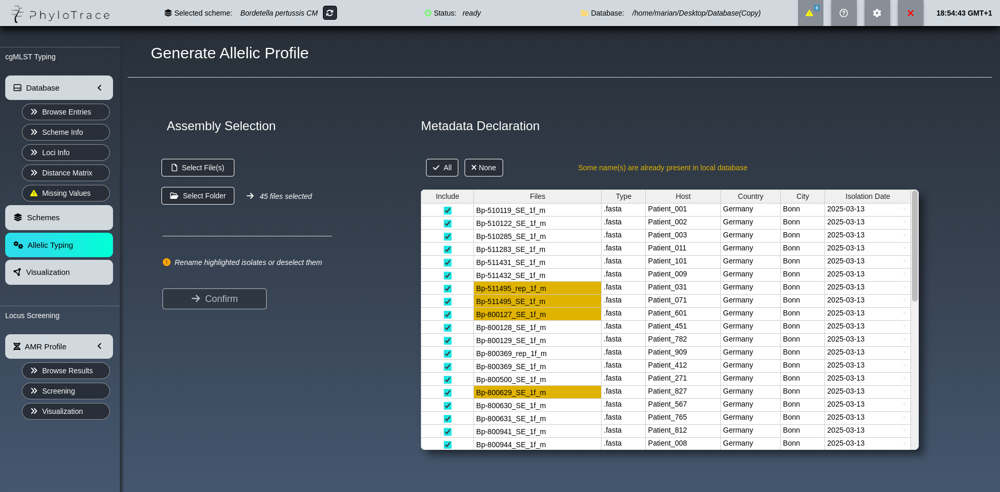
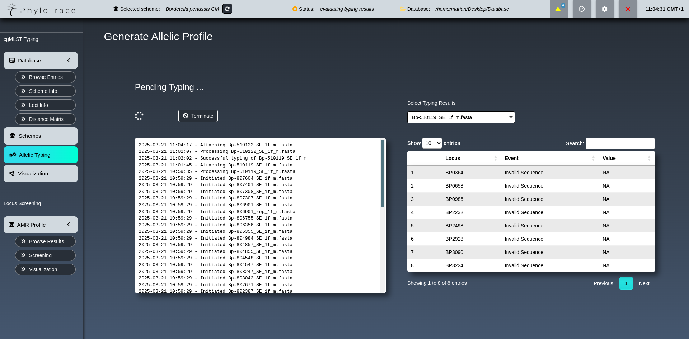
Building and Managing Database
Step-by-step the database is filled with typed isolates and the connected metadata. The database browser provides full control allowing to edit, delete and inspect the entries that were added so far. It features several functions, e.g. to export the table, compare allelic profiles or to introduce custom variables with information about presence/absence of antimicrobial resistances, gene expression values or any other characteristic, to answer individual research questions.
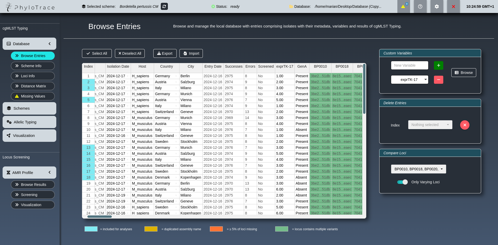
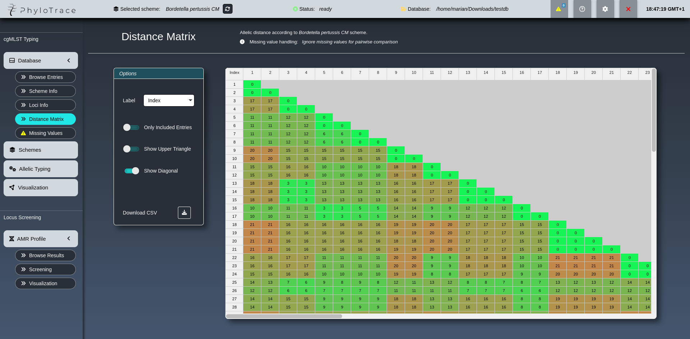
Visualizing Typing Results
Create and customize sophisticated hierarchic trees (Neighbour-Joining & UPGMA) or networks (Minimum-spanning) to visualize the underlying relationship between the isolates in your local database. The plots can be heavily modified and enriched with useful information e.g. by mapping previously added custom variables. The resulting visuals can be saved in multiple formats and even included in a report document that can be generated from within the app.
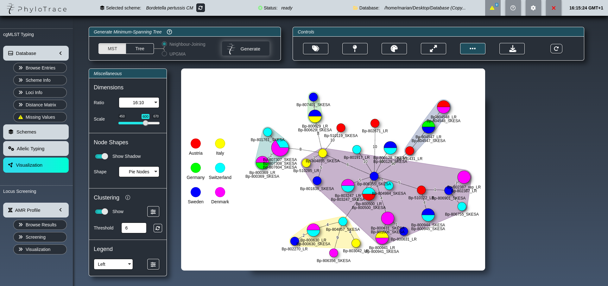
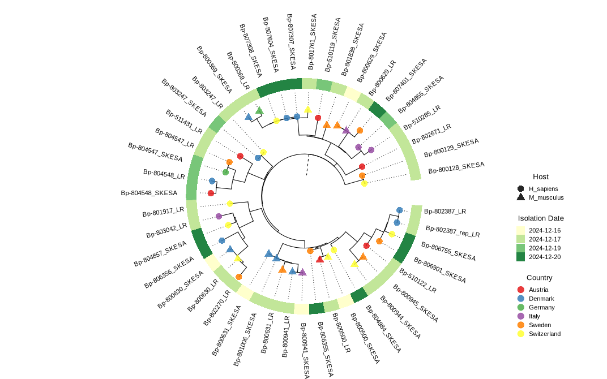
Antimicrobial Resistance Screening
Screen isolates in seconds for known resistance, virulence and stress genes using an interface that wraps around the proven AMRFinder tool. Visualize the presence or absence of these markers along with user-defined variables among isolates in a fully interactive heatmap.
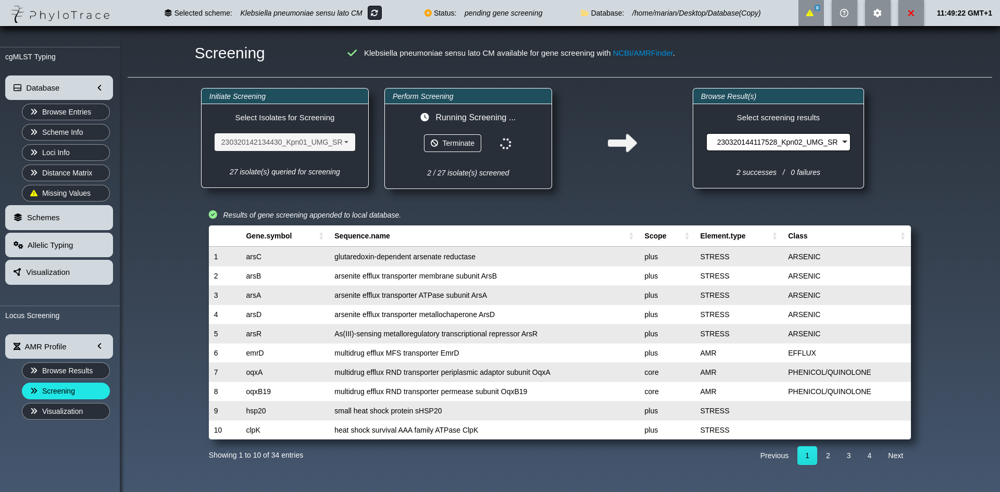
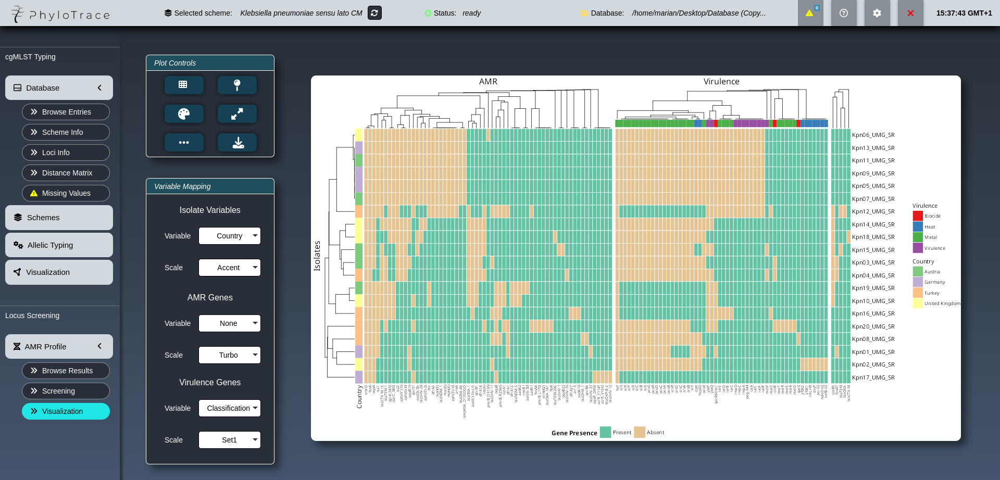
1.2 Compatibility
Minimum System Requirements
| Component | Description |
|---|---|
| Operating System | Any Linux distribution capable of running R and Conda (e.g. Ubuntu, Fedora, Debian, ArchLinux, OpenSuse, etc.) |
| Web Browser | Compatible with latest version of major browsers (Chrome, Brave, Chromium, Opera, Vivaldi) |
| Storage | ≥ 250 GB SSD/HDD |
| RAM | ≥ 8 GB |
| CPU | Multi-core processor, ≥ 2.5 GHz |
These system requirements are provided as estimates. It is possible for the application to run on lower-spec systems, depending on application workload and usage patterns.
The Firefox browser has display-issues that might impair the usage.
1.3 Citation
If you use PhyloTrace for your paper or publication, cite us with
- Freisleben, M. & Paskali, F. (2024). PhyloTrace. Zenodo. DOI: 10.5281/zenodo.10996423.
@software{Freisleben_Paskali_2024,
author = {Freisleben, Marian and Paskali, Filip},
title = {PhyloTrace},
year = {2024},
publisher = {Zenodo},
doi = {10.5281/zenodo.10996423},
url = {https://doi.org/10.5281/zenodo.10996423}
}2 Installation
PhyloTrace can be installed in a linux environment and, using Windows Subsystem for Linux (WSL) also on Microsoft Windows.
For the installation on a linux OS follow the steps starting from 2.2 Install Miniconda. If you want to install PhyloTrace on Microsoft Windows, you must first follow the steps found in the collapsible menu below before proceeding with the other steps.
Installing PhyloTrace on Windows using WSL (Windows Subsystem for Linux)
To install Ubuntu on WSL, start PowerShell as administrator and run the following command:
wsl --installWhen the installation is complete, a prompt will appear for new UNIX username and password. Enter the preferred username and password.
After successful installation, WSL can be started from Start Menu by launching WSL or Ubuntu shortcut.
For the full functionality of PhyloTrace, WSL utilities should be installed. Start WSL and enter the following commands:
sudo add-apt-repository ppa:wslutilities/wslu
sudo apt update
sudo apt install wsluAfter this, follow the instructions below.
2.1 Download Source Code
Donwload the source code of the latest stable version.
Use the terminal to navigate to an accessible location on your system and clone the repository using Git.
git clone https://github.com/liora-bioinformatics/PhyloTrace.gitAlternatively download PhyloTrace manually from Version 1.6.1 and extract/unzip it to a location on your system.
2.2 Install Miniconda
Is Miniconda or another Conda Distribution installed on the system?
No :arrow_right: Run the installation below and initialize conda
Yes :arrow_right: Proceed to 2.3 Install PhyloTrace
These four commands quickly and quietly install the latest 64-bit version of Miniconda and then clean up after themselves.
For installation of Miniconda on system with different architecture, please refer to the Miniconda documentation.
mkdir -p ~/miniconda3
wget https://repo.anaconda.com/miniconda/Miniconda3-latest-Linux-x86_64.sh -O ~/miniconda3/miniconda.sh
bash ~/miniconda3/miniconda.sh -b -u -p ~/miniconda3
rm ~/miniconda3/miniconda.shAfter installation, the newly-installed Miniconda should be initialized with the following command:
~/miniconda3/bin/conda initTo start using conda, the terminal should be restarted.
Optional: To disable automatic activation of conda whenever the terminal is started, the following command can be executed:
conda config --set auto_activate_base false2.3 Install PhyloTrace
Run install script to generate a run script and include PhyloTrace desktop icon in the Applications Menu.
cd path/to/phylotrace/directory
bash install_phylotrace.shIn the command above, replace
path/to/phylotrace/directorywith the actual path linking to the PhyloTrace directory on your system.
2.4 Uninstall
To uninstall PhyloTrace from your system, remove the application directory and run the following command to remove the desktop launcher and the PhyloTrace conda environment:
rm -r $HOME/.local/share/phylotrace
rm $HOME/.local/share/applications/PhyloTrace.desktop
rm -f $HOME/.local/share/icons/hicolor/*/apps/PhyloTrace_flat.png
conda remove -n PhyloTrace --all -y2.5 Troubleshooting
There are multiple possible sources for issues with the installation. Common mistakes during the
installation are: - Change path/to/phylotrace/directory in the command chunks with the actual
path of the repository containing all PhyloTrace files - Before installation make sure the whole
repository is unzipped to a writable location in your system
If the installation issues persist feel free to contact us via info@phylotrace.com or open an issue.
Desktop Launcher not Working
If the desktop launcher is not working, the currently set default browser is likely not declared properly. To resolve this, change the R_BROWSER environment variable to the executable name of the desired browser (executable names for popular browsers are listed in the table below). For example to use Google Chrome, execute the following command:
cd path/to/phylotrace/directory
R_BROWSER=google-chrome
bash run_phylotrace.shIn the command above, replace
path/to/phylotrace/directorywith the actual path linking to the PhyloTrace directory on your system.
| Browser | browser-name |
|---|---|
| Google Chrome | google-chrome or google-chrome-stable |
| Chromium | chromium |
| Brave | brave-browser |
| Opera | opera |
| Vivaldi | vivaldi |
3 Launch PhyloTrace
Linux - Start PhyloTrace by using the launcher in Applications Menu. A browser tab with the app will automatically open in the default browser.
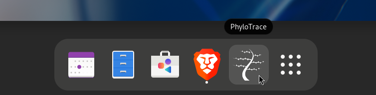
Launching from terminal (and for Microsoft Windows)
For Windows users, or if launching from the Linux desktop does not work, the alternative way to run the app is to execute these commands:
cd path/to/phylotrace/directory
bash run_phylotrace.shIn the command above, replace
path/to/phylotrace/directorywith the actual path linking to the PhyloTrace directory on your system.
To install and use PhyloTrace on Windows, a user account with administration rights is required.
The user manual containing documentation is available at www.phylotrace.com/user-manual.